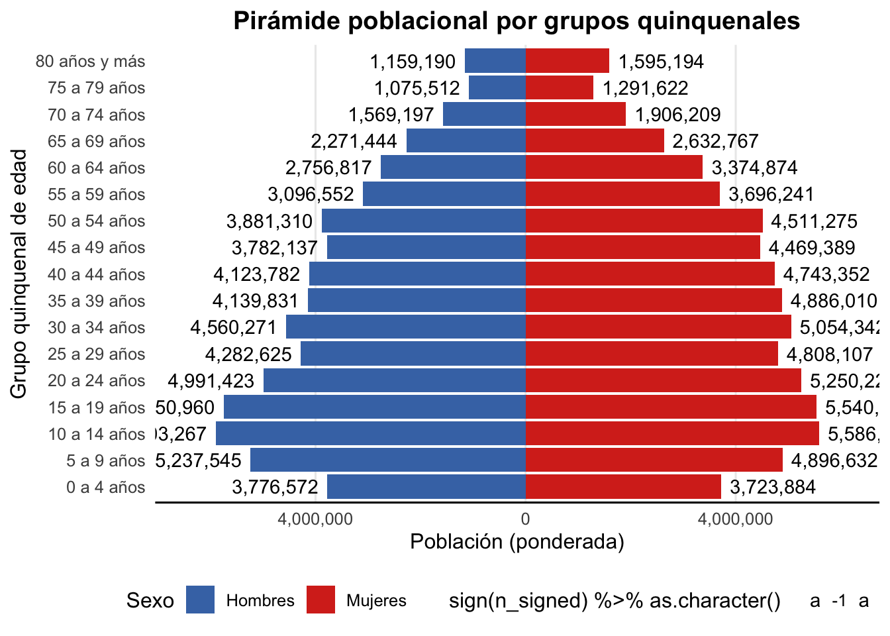
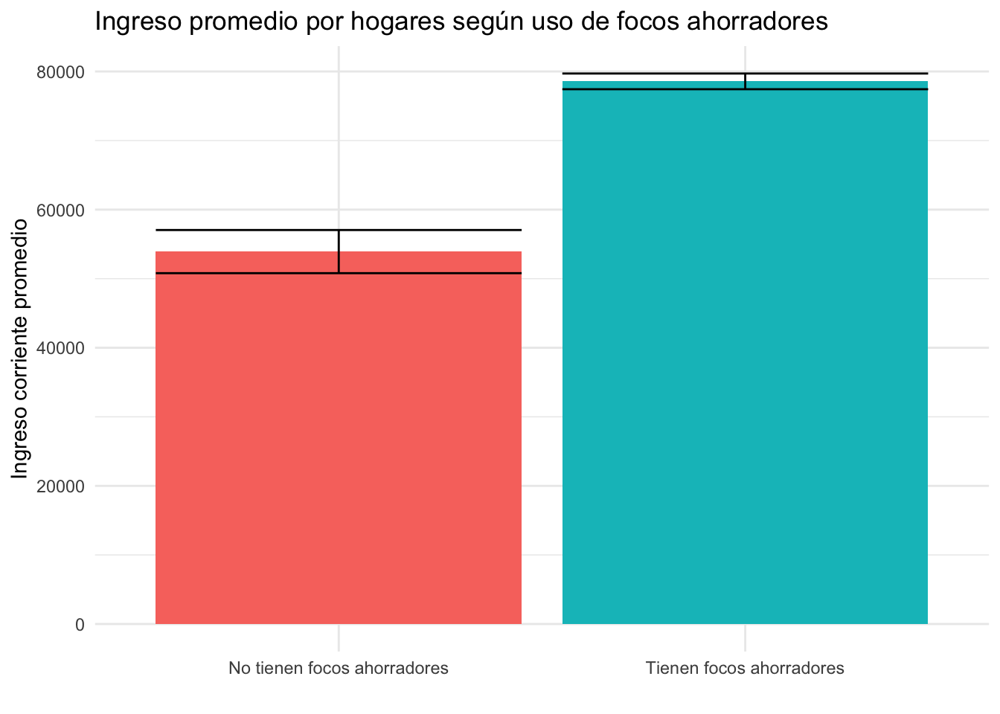

# Librerías
library(tidyverse)
library(srvyr)
library(foreign)
library(scales)
library(forcats)
library(sf)Análisis de la ENIGH 2024: Desigualdad, Demografía y Redes Sociales en México
Introducción
La Encuesta Nacional de Ingresos y Gastos de los Hogares (ENIGH) 2024 es uno de los instrumentos estadísticos más importantes para comprender la realidad socioeconómica de México. Realizada por el INEGI, esta encuesta proporciona información detallada sobre los ingresos, gastos, características sociodemográficas y condiciones de vida de los hogares mexicanos.
En este análisis, trabajaremos con los microdatos de la ENIGH 2024 para explorar diferentes dimensiones de la realidad mexicana. Es importante destacar que esta encuesta utiliza un diseño muestral complejo con factores de expansión (ponderadores), lo que permite que una muestra relativamente pequeña de hogares sea representativa de toda la población mexicana. Por esta razón, utilizaremos el paquete srvyr de R, que nos permite trabajar correctamente con estos diseños muestrales y obtener estimaciones poblacionales válidas.
A lo largo de este documento examinaremos:
- La distribución del ingreso por deciles
- La estructura demográfica de la población
- Las condiciones de vivienda de adultos mayores
- Los ingresos de trabajadores artísticos
- La relación entre ahorro energético e ingresos
- La fortaleza de las redes sociales por entidad federativa
Configuración inicial
Antes de comenzar, cargamos las librerías necesarias para el análisis. Cada una cumple una función específica:
tidyverse: Para manipulación y visualización de datossrvyr: Para trabajar con diseños muestrales complejosforeign: Para leer archivos DBF (formato de los microdatos de INEGI)scales: Para dar formato a números y etiquetas en gráficasforcats: Para manejo de variables categóricas (factores)sf: Para trabajar con datos espaciales y generar mapas
1. Deciles de ingreso per cápita
Contexto
La desigualdad en la distribución del ingreso es uno de los principales desafíos de México. Los deciles de ingreso son una forma de dividir a la población en 10 grupos iguales (cada uno con 10% de la población) ordenados de menor a mayor ingreso. Esto nos permite identificar qué proporción del ingreso total se concentra en los hogares más ricos versus los más pobres.
Metodología
Para este análisis utilizamos el ingreso per cápita, es decir, el ingreso total del hogar dividido entre el número de integrantes. Esto nos da una medida más justa de la capacidad económica de cada hogar, ya que un hogar con mayor ingreso absoluto pero más integrantes puede tener menor bienestar que uno con menor ingreso pero menos personas.
El proceso involucra:
- Cargar el concentrado de hogares: Este archivo contiene información resumida de cada hogar encuestado
- Calcular el ingreso per cápita: Dividimos el ingreso corriente total entre el número de integrantes
- Obtener los puntos de corte: Usando los factores de expansión, calculamos los valores que delimitan cada decil
- Clasificar cada hogar: Asignamos a cada hogar su decil correspondiente
- Verificar el balance: Comprobamos que cada decil contenga aproximadamente 10% de los hogares
# Cargamos datos del concentrado hogar
# Este archivo contiene un resumen de las características de cada hogar
conc_hogar <- read.dbf("01_datos/concentradohogar.dbf") %>%
as_tibble()
# Calculamos ingreso per cápita
# Dividimos el ingreso corriente (ing_cor) entre el total de integrantes (tot_integ)
ing_per_capita <- conc_hogar %>%
group_by(folioviv, foliohog, ing_cor, tot_integ, factor) %>%
transmute(ing_per_cap = ing_cor/tot_integ) %>%
ungroup()
# Obtenemos los cortes de los cuantiles
# Usamos as_survey_design() para indicar que trabajamos con una encuesta
# El parámetro weights especifica la variable con los ponderadores
# survey_quantile() calcula los cuantiles respetando el diseño muestral
montos_cuantiles <- ing_per_capita %>%
as_survey_design(weights = factor) %>%
summarise(cuantil = survey_quantile(x = ing_per_cap,
quantiles = seq(0,1,0.1),
na.rm = T,
vartype = NULL))
# Clasificación por deciles
# Usamos case_when() para crear una variable categórica
# que asigna cada hogar a su decil correspondiente según su ingreso per cápita
hogares_por_cuantil <- ing_per_capita %>%
mutate(decil = case_when(
ing_per_cap < montos_cuantiles$cuantil_q10 ~ "I",
between(ing_per_cap, montos_cuantiles$cuantil_q10, montos_cuantiles$cuantil_q20) ~ "II",
between(ing_per_cap, montos_cuantiles$cuantil_q20, montos_cuantiles$cuantil_q30) ~ "III",
between(ing_per_cap, montos_cuantiles$cuantil_q30, montos_cuantiles$cuantil_q40) ~ "IV",
between(ing_per_cap, montos_cuantiles$cuantil_q40, montos_cuantiles$cuantil_q50) ~ "V",
between(ing_per_cap, montos_cuantiles$cuantil_q50, montos_cuantiles$cuantil_q60) ~ "VI",
between(ing_per_cap, montos_cuantiles$cuantil_q60, montos_cuantiles$cuantil_q70) ~ "VII",
between(ing_per_cap, montos_cuantiles$cuantil_q70, montos_cuantiles$cuantil_q80) ~ "VIII",
between(ing_per_cap, montos_cuantiles$cuantil_q80, montos_cuantiles$cuantil_q90) ~ "IX",
ing_per_cap > montos_cuantiles$cuantil_q90 ~ "X",
T ~ NA
))
# Verificación de balance
# Calculamos cuántos hogares (expandidos) hay en cada decil
# y verificamos que sea aproximadamente 10% en cada grupo
hogares_por_cuantil %>%
as_survey_design(weights = factor) %>%
group_by(decil) %>%
survey_count() %>%
ungroup() %>%
mutate(pp = 100*(n/sum(n)))# A tibble: 10 × 4
decil n n_se pp
<chr> <dbl> <dbl> <dbl>
1 I 3882885 52125. 10.00
2 II 3886411 57303. 10.0
3 III 3880359 59435. 9.99
4 IV 3882538 60535. 10.00
5 IX 3883153 60216. 10.0
6 V 3883096 59377. 10.0
7 VI 3883249 60756. 10.0
8 VII 3882932 61440. 10.00
9 VIII 3883121 61129. 10.0
10 X 3882486 62369. 10.00Resultados
Como podemos observar en la tabla resultante, la distribución de hogares por decil está correctamente balanceada, con aproximadamente 10% de hogares en cada grupo. Esto confirma que nuestro cálculo de cuantiles fue realizado correctamente y que los factores de expansión están siendo aplicados de manera apropiada.
2. Pirámide poblacional
Contexto
Una pirámide poblacional es una representación gráfica de la estructura por edad y sexo de una población. Su forma nos dice mucho sobre el momento demográfico que vive un país: pirámides anchas en la base indican poblaciones jóvenes con alta natalidad, mientras que formas más rectangulares o invertidas sugieren poblaciones envejecidas.
México se encuentra en una etapa de transición demográfica, pasando de ser un país con población muy joven a uno con creciente proporción de adultos mayores. Esta información es crucial para la planeación de políticas públicas en áreas como educación, salud y pensiones.
Metodología
Trabajamos con el tabulado de población de la ENIGH, que contiene información individual de cada persona en los hogares encuestados. El proceso incluye:
- Validar la población total: Verificamos que la suma de factores de expansión coincida con la población total de México
- Crear grupos quinquenales: Agrupamos las edades en intervalos de 5 años (estándar demográfico)
- Calcular población por grupo: Usando el diseño muestral, estimamos cuántas personas hay en cada combinación de sexo y grupo de edad
- Preparar datos para visualización: Creamos una variable que permita que hombres y mujeres se grafiquen en lados opuestos
- Generar la pirámide: Usamos
ggplot2para crear la visualización
# Cargamos datos de población
# Este archivo contiene un registro por cada persona en los hogares encuestados
pob <- read.dbf("01_datos/poblacion.dbf") %>%
as_tibble()
# Verificamos población total
# La suma de los factores de expansión debe aproximarse a la población total de México
sum(pob$factor) # 130,325,969[1] 130325969# Esta cifra coincide con las estimaciones oficiales de población para 2024
# Creamos grupos quinquenales
# El estándar demográfico internacional es usar intervalos de 5 años
# Esto facilita comparaciones con otros países y con censos anteriores
pob_quinquenal <- pob %>%
select(folioviv, foliohog, numren, parentesco, sexo, edad, factor) %>%
mutate(
grupo_quinquenal_edad = case_when(
edad < 5 ~ "0 a 4 años",
between(edad, 5, 9) ~ "5 a 9 años",
between(edad, 10, 14) ~ "10 a 14 años",
between(edad, 15, 19) ~ "15 a 19 años",
between(edad, 20, 24) ~ "20 a 24 años",
between(edad, 25, 29) ~ "25 a 29 años",
between(edad, 30, 34) ~ "30 a 34 años",
between(edad, 35, 39) ~ "35 a 39 años",
between(edad, 40, 44) ~ "40 a 44 años",
between(edad, 45, 49) ~ "45 a 49 años",
between(edad, 50, 54) ~ "50 a 54 años",
between(edad, 55, 59) ~ "55 a 59 años",
between(edad, 60, 64) ~ "60 a 64 años",
between(edad, 65, 69) ~ "65 a 69 años",
between(edad, 70, 74) ~ "70 a 74 años",
between(edad, 75, 79) ~ "75 a 79 años",
edad >= 80 ~ "80 años y más",
TRUE ~ NA_character_
),
# Convertimos a factor ordenado para que las categorías aparezcan en orden lógico
grupo_quinquenal_edad = factor(
grupo_quinquenal_edad,
levels = c("0 a 4 años", "5 a 9 años", "10 a 14 años", "15 a 19 años",
"20 a 24 años", "25 a 29 años", "30 a 34 años", "35 a 39 años",
"40 a 44 años", "45 a 49 años", "50 a 54 años", "55 a 59 años",
"60 a 64 años", "65 a 69 años", "70 a 74 años", "75 a 79 años",
"80 años y más"),
ordered = TRUE
)
)
# Calculamos datos para la pirámide
# survey_count() respeta el diseño muestral y nos da estimaciones poblacionales
# Incluimos intervalos de confianza (ci) para conocer la precisión de las estimaciones
datos_piramide <- pob_quinquenal %>%
as_survey_design(weights = factor) %>%
group_by(sexo, grupo_quinquenal_edad) %>%
survey_count(vartype = "ci")
# Preparamos datos para visualización
# En una pirámide poblacional, por convención, los hombres van a la izquierda (valores negativos)
# y las mujeres a la derecha (valores positivos)
datos_plot <- datos_piramide %>%
mutate(
sexo = case_when(
sexo == 1 ~ "Hombres",
sexo == 2 ~ "Mujeres"),
n_signed = if_else(sexo == "Hombres", -n, n))
# Generamos la pirámide
# Usamos coord_flip() para rotar el gráfico y que la edad quede en el eje vertical
# geom_text() añade las etiquetas con el número de personas en cada grupo
ggplot(datos_plot, aes(x = grupo_quinquenal_edad, y = n_signed, fill = sexo)) +
geom_col(width = 0.9) +
geom_text(aes(label = prettyNum(abs(n_signed), big.mark = ","),
hjust = sign(n_signed) %>% as.character())) +
scale_discrete_manual(aesthetics = "hjust",
values = c("1" = -0.1, "-1" = 1.1)) +
coord_flip() +
scale_y_continuous(
expand = expansion(c(0.1, 0.1)),
labels = function(x) label_number(big.mark = ",")(abs(x))
) +
scale_fill_manual(values = c("Hombres" = "#4575b4", "Mujeres" = "#d7301f")) +
labs(
title = "Pirámide poblacional por grupos quinquenales",
x = "Grupo quinquenal de edad",
y = "Población (ponderada)",
fill = "Sexo"
) +
theme_minimal(base_size = 12) +
theme(
plot.title = element_text(hjust = 0.5, face = "bold"),
panel.grid.major.y = element_blank(),
panel.grid.minor = element_blank(),
legend.position = "bottom",
axis.line.x = element_line()
)
Interpretación
La pirámide resultante muestra la transición demográfica de México. Podemos observar cómo la base se ha ido estrechando en las últimas décadas (menos nacimientos), mientras que los grupos de edad intermedia son más amplios. Esto refleja el bono demográfico que México está experimentando: una gran proporción de población en edad productiva. Sin embargo, también anticipa el desafío futuro del envejecimiento poblacional.
3. Adultos mayores en condiciones de hacinamiento
Contexto
El hacinamiento es un indicador clave de carencia en la vivienda. Se refiere a la situación en que un número excesivo de personas viven en un espacio limitado, lo que puede afectar la salud física y mental, la privacidad y la calidad de vida. En México, el CONEVAL define hacinamiento cuando hay más de 2.5 personas por cuarto para dormir.
Los adultos mayores son un grupo particularmente vulnerable, y sus condiciones de vivienda son un indicador importante de bienestar y dignidad en esta etapa de la vida.
Metodología
Para este análisis, combinamos información de dos tabulados:
- Viviendas: Para obtener el número de cuartos para dormir
- Población: Para identificar a los adultos mayores (60 años o más)
El proceso incluye:
- Contar el número total de habitantes por vivienda
- Calcular el índice de hacinamiento (habitantes/cuartos para dormir)
- Clasificar viviendas con más de 2.5 habitantes por cuarto como “hacinamiento”
- Filtrar solo adultos mayores
- Calcular el porcentaje que vive en hacinamiento
# Cargamos datos de viviendas
# Este archivo contiene características de las viviendas encuestadas
viviendas <- read.dbf("01_datos/viviendas.dbf") %>%
as_tibble()
# Extraemos el número de cuartos para dormir de cada vivienda
cuartos_por_vivienda <- viviendas %>%
select(folioviv, cuart_dorm)
# Calculamos condición de hacinamiento
# Primero ligamos población con datos de vivienda usando folioviv como llave
adultos_mayores_condicion_vivienda <- pob %>%
select(folioviv, foliohog, edad, factor) %>%
left_join(cuartos_por_vivienda) %>%
group_by(folioviv) %>%
# Contamos cuántas personas viven en la vivienda
mutate(total_habitantes = n()) %>%
# Calculamos el índice: habitantes por cuarto para dormir
mutate(habitantes_por_cuarto_dorm = total_habitantes/cuart_dorm) %>%
# Clasificamos usando el umbral de 2.5 (criterio CONEVAL)
mutate(cond_hacinamiento = ifelse(habitantes_por_cuarto_dorm > 2.5,
yes = "Hacinamiento",
no = "No hacinamiento")) %>%
ungroup() %>%
# Filtramos solo adultos mayores (60 años o más)
filter(edad >= 60)
# Calculamos la distribución porcentual
# Usando el diseño muestral para obtener estimaciones poblacionales válidas
adultos_mayores_condicion_vivienda %>%
as_survey_design(weights = factor) %>%
group_by(cond_hacinamiento) %>%
survey_count() %>%
ungroup() %>%
mutate(pp = 100*(n/sum(n)))# A tibble: 2 × 4
cond_hacinamiento n n_se pp
<chr> <dbl> <dbl> <dbl>
1 Hacinamiento 1711958 39553. 8.72
2 No hacinamiento 17920868 100275. 91.3 Hallazgo
Los resultados muestran que solo el 8.72% de los adultos mayores en México viven en condiciones de hacinamiento. Esto es una cifra relativamente baja y puede deberse a varios factores:
- Los adultos mayores tienden a vivir en hogares de menor tamaño (hijos ya independizados)
- Muchos han logrado mejorar sus condiciones de vivienda a lo largo de su vida
- Las políticas de vivienda de décadas pasadas pueden haber tenido un impacto positivo
Sin embargo, esto no significa que no enfrentan otros desafíos habitacionales como accesibilidad, servicios o ubicación.
4. Ingresos de trabajadores artísticos
Contexto
Los trabajadores del sector artístico y cultural representan un segmento importante de la economía creativa mexicana. Sin embargo, históricamente han enfrentado condiciones laborales precarias, ingresos inestables y falta de protección social. Este análisis nos permite cuantificar su situación económica.
Utilizamos el Sistema Nacional de Clasificación de Ocupaciones (SINCO) del INEGI, que categoriza todas las ocupaciones en México. Específicamente analizamos las categorías:
- 2171: Compositores y arreglistas
- 2172: Músicos
- 2173: Cantantes
- 2174: Bailarines y coreógrafos
- 2175: Actores
Metodología
Este es un análisis más complejo que requiere combinar tres fuentes de información:
- Trabajos: Para identificar a las personas con ocupaciones artísticas (usando código SINCO)
- Población: Para obtener los factores de expansión
- Ingresos: Para sumar todos los ingresos de cada persona
Además, calculamos el Coeficiente de Variación (CV) para validar la calidad de nuestras estimaciones. Un CV mayor a 25% indicaría que la muestra es demasiado pequeña para dar estimaciones confiables.
# Cargamos datos de trabajos
# Contiene información sobre las ocupaciones de las personas que trabajan
trabajos <- read.dbf("01_datos/trabajos.dbf") %>% as_tibble()
# Filtramos artistas interpretativos según SINCO
# Usamos filter() con %in% para seleccionar las 5 categorías de interés
artistas <- trabajos %>%
select(folioviv, foliohog, numren, sinco) %>%
filter(sinco %in% c(2171, 2172, 2173, 2174, 2175)) %>%
unique()
# Factores de expansión
# Los obtenemos del tabulado de población (cada persona tiene su propio factor)
fac_exp <- pob %>%
select(folioviv, foliohog, numren, factor)
# Ingresos totales por persona
# Una persona puede tener múltiples fuentes de ingreso, por eso agrupamos y sumamos
# ing_tri es el ingreso trimestral (la ENIGH pregunta por ingresos de los últimos 3 meses)
ingresos <- read.dbf("01_datos/ingresos.dbf") %>% as_tibble() %>%
select(folioviv, foliohog, numren, ing_tri) %>%
group_by(folioviv, foliohog, numren) %>%
summarise(ing_tri_total = sum(ing_tri, na.rm = T))
# Calculamos ingresos de artistas
# Ligamos las tres tablas usando left_join() con las llaves apropiadas
# survey_mean() calcula el promedio respetando el diseño muestral
ingresos_artistas <- artistas %>%
left_join(fac_exp) %>%
left_join(ingresos) %>%
as_survey_design(weights = factor) %>%
summarise(
ingreso_corriente_promedio_trimestral = survey_mean(ing_tri_total, na.rm = T),
ingreso_corriente_promedio_mensual = ingreso_corriente_promedio_trimestral/3
)
# Población estimada de artistas
# survey_count() nos da el total expandido y su error estándar (se)
# Esto nos permite calcular intervalos de confianza (ci)
artistas %>%
left_join(fac_exp) %>%
left_join(ingresos) %>%
as_survey_design(weights = factor) %>%
survey_count(vartype = c("ci", "se"))# A tibble: 1 × 4
n n_low n_upp n_se
<dbl> <dbl> <dbl> <dbl>
1 209181 192711. 225651. 8384.ingresos_artistas# A tibble: 1 × 4
ingreso_corriente_promedio_tri…¹ ingreso_corriente_pr…² ingreso_corriente_pr…³
<dbl> <dbl> <dbl>
1 37878. 2592. 12626.
# ℹ abbreviated names: ¹ingreso_corriente_promedio_trimestral,
# ²ingreso_corriente_promedio_trimestral_se,
# ³ingreso_corriente_promedio_mensual
# ℹ 1 more variable: ingreso_corriente_promedio_mensual_se <dbl>Resultados y validación estadística
Se estima que hay aproximadamente entre 192,000 y 225,000 artistas de estas categorías en México, con un punto de estimación cercano a 209,000.
Para validar la calidad de esta estimación, calculamos el Coeficiente de Variación:
CV población = (Error Estándar / Estimación) × 100 = (8,384 / 209,181) × 100 = 4.01%
Como este valor es mucho menor a 25%, podemos confiar en que la estimación es estadísticamente robusta.
El ingreso promedio trimestral es de aproximadamente $37,878 pesos, equivalente a $12,626 pesos mensuales. Este ingreso es relativamente bajo considerando que:
- Está por debajo del salario promedio nacional
- No considera la informalidad y estacionalidad del trabajo artístico
- Muchos artistas pueden tener periodos sin ingreso entre proyectos
5. Focos ahorradores e ingresos
Contexto
El uso de focos ahorradores (LED o fluorescentes compactos) es un indicador de conciencia ambiental y también puede estar relacionado con el nivel socioeconómico del hogar. Los focos ahorradores requieren mayor inversión inicial pero generan ahorros a largo plazo. Este análisis explora si existe una relación entre su adopción y el nivel de ingresos.
Metodología
Combinamos información de viviendas y hogares para:
- Identificar qué viviendas reportan tener al menos un foco ahorrador
- Calcular el ingreso corriente promedio de hogares según tengan o no focos ahorradores
- Visualizar la diferencia incluyendo intervalos de confianza
# Creamos variable dicotómica: tienen/no tienen focos ahorradores
# focos_ahor contiene el número de focos ahorradores en la vivienda
viviendas_con_focos_ahorradores <- viviendas %>%
select(folioviv, focos_ahor, factor) %>%
mutate(tienen_focos_ahorradores = ifelse(focos_ahor > 0 & !is.na(focos_ahor),
yes = "Tienen focos ahorradores",
no = "No tienen focos ahorradores"))
# Porcentaje de viviendas con focos ahorradores
# Esto nos da una idea de qué tan extendida está esta tecnología
viviendas_con_focos_ahorradores %>%
as_survey_design(weights = factor) %>%
group_by(tienen_focos_ahorradores) %>%
survey_count() %>%
ungroup() %>%
mutate(pp = 100*(n/sum(n)))# A tibble: 2 × 4
tienen_focos_ahorradores n n_se pp
<chr> <dbl> <dbl> <dbl>
1 No tienen focos ahorradores 1098725 26555. 2.86
2 Tienen focos ahorradores 37257317 143483. 97.1 # Ingresos según uso de focos ahorradores
# Ligamos hogares con viviendas para conocer tanto ingresos como características de la vivienda
# survey_mean() con vartype = "ci" nos da intervalos de confianza
ingresos_tienen_no_focos_ahorradores <- conc_hogar %>%
select(folioviv, foliohog, factor, ing_cor) %>%
left_join(viviendas_con_focos_ahorradores) %>%
as_survey_design(weights = factor) %>%
group_by(tienen_focos_ahorradores) %>%
summarise(ingreso_corriente_hogares = survey_mean(ing_cor, vartype = "ci"))
# Gráfica comparativa
# geom_errorbar muestra los intervalos de confianza (incertidumbre de la estimación)
ingresos_tienen_no_focos_ahorradores %>%
ggplot(aes(x = tienen_focos_ahorradores,
fill = tienen_focos_ahorradores,
y = ingreso_corriente_hogares)) +
geom_col() +
geom_errorbar(aes(ymin = ingreso_corriente_hogares_low,
ymax = ingreso_corriente_hogares_upp)) +
labs(title = "Ingreso promedio por hogares según uso de focos ahorradores",
x = "",
y = "Ingreso corriente promedio",
fill = "") +
theme_minimal() +
theme(legend.position = "none")
Interpretación
La gráfica muestra claramente que existe una relación positiva entre el ingreso del hogar y el uso de focos ahorradores. Los hogares que reportan tener focos ahorradores tienen, en promedio, mayores ingresos que aquellos que no los tienen.
Esto puede deberse a varios factores:
- Capacidad de inversión: Los focos ahorradores tienen mayor costo inicial, accesible para hogares con más recursos
- Nivel educativo: Hogares con mayores ingresos pueden tener mayor educación y conciencia sobre ahorro energético
- Tipo de vivienda: Viviendas de mejor calidad (correlacionadas con mayores ingresos) pueden incluir iluminación más moderna
Las barras de error (intervalos de confianza) son relativamente pequeñas, lo que indica que estas estimaciones son precisas.
Conclusiones
Este análisis de la ENIGH 2024 nos ha permitido explorar múltiples dimensiones de la realidad socioeconómica mexicana:
- Desigualdad: La construcción de deciles nos da herramientas para medir y monitorear la distribución del ingreso
- Demografía: La pirámide poblacional confirma la transición demográfica y sus implicaciones para políticas públicas
- Vivienda: Las condiciones de hacinamiento de adultos mayores son relativamente favorables, aunque persisten otros desafíos
- Trabajo artístico: Se confirman los bajos ingresos del sector cultural, información útil para políticas de apoyo
- Tecnología y sustentabilidad: La adopción de focos ahorradores está relacionada con nivel socioeconómico
- Capital social: Existen importantes variaciones geográficas en la fortaleza de las redes de apoyo
Aspectos metodológicos clave
A lo largo del análisis, hemos aplicado buenas prácticas para trabajar con encuestas complejas:
- Uso correcto de factores de expansión con el paquete
srvyr - Validación de estimaciones mediante coeficientes de variación
- Cálculo de intervalos de confianza para cuantificar incertidumbre
- Vinculación de múltiples tabulados para responder preguntas complejas
- Visualización efectiva de resultados para facilitar interpretación
Este tipo de análisis demuestra el enorme valor de los microdatos abiertos que publica el INEGI y cómo pueden ser aprovechados para generar evidencia relevante para la política pública y la investigación social.